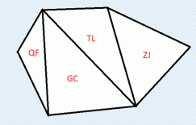

到了难得的暑假，为了庆祝小白在数学考试中取得的优异成绩，小蓝决定带小白出去旅游~~
经过一番抉择，两人决定将T国作为他们的目的地。T国的国土可以用一个凸 $N$边形来表示，$N$个顶点表示 $N$个入境/出境口。T国包含 $N-2$个城市，每个城市都是顶点均为 $N$边形顶点的三角形（换而言之，城市组成了关于T国的一个三角剖分)。两人的旅游路线可以看做是连接$N$个顶点中不相邻两点的线段。

为了能够买到最好的纪念品，小白希望旅游路线上经过的城市尽量多。作为小蓝的好友，你能帮帮小蓝吗？
每个输入中仅包含一个测试数据。
第一行包含两个由空格隔开的正整数 $N$，$N$ 的含义如题目所述。
接下来有 $N-2$ 行，每行包含三个整数 $p,q,r$，表示该城市三角形的三个顶点的编号（T 国的 $N$ 个顶点按顺时间方向从 $1$ 至 $n$ 编号）。
输出文件共包含 $1$ 行，表示最多经过的城市数目。(一个城市被当做经过当且仅当其与线路有至少两个公共点)
6 1 2 4 2 3 4 1 4 5 1 5 6
4
$4 \le N \le 200000$
 Comet OJ
Comet OJ